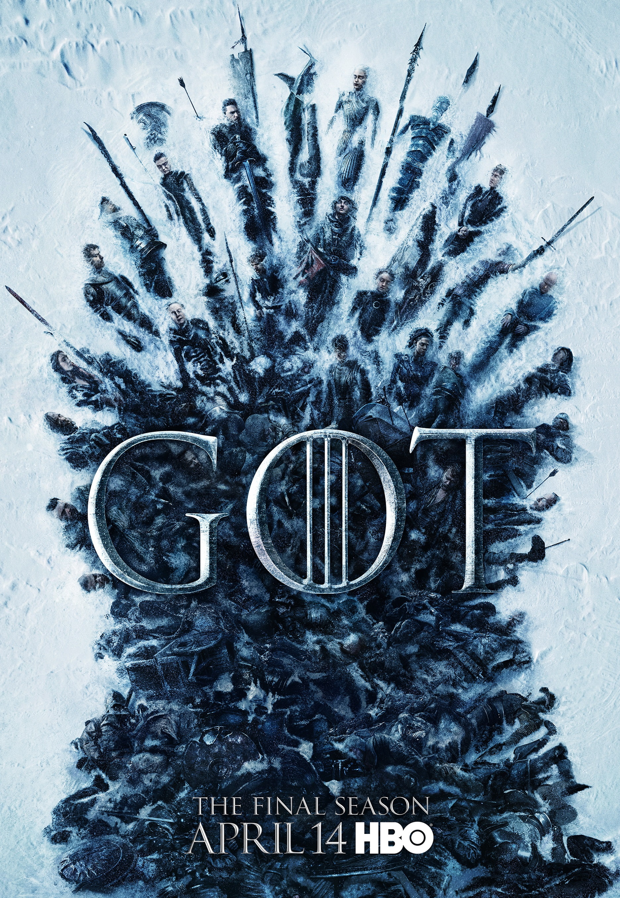

Game of Thrones - Season 8

The final season of game of thrones was rushed, poorly executed and full of plot holes. Fans of the show will be rightfully annoyed at a painfully unconvincing conclusion to a story that his literally taken years to develop and narrate. Terrific CGI and large-scale battles were not enough to save the season, seemingly being prioritised over a cohesive story and convincing characters. Other let downs, include an unsatisfying end to the main antagonist of the entire show, a manufactured plot that felt like it was written by a child and an overall disappointing end to one of the most anticipated shows of all time.